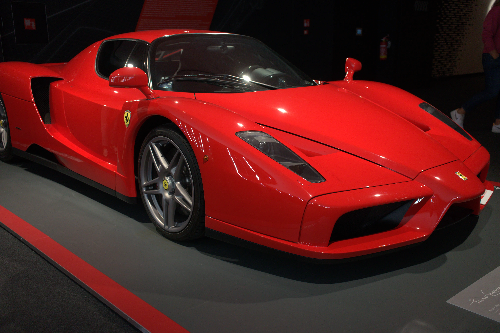
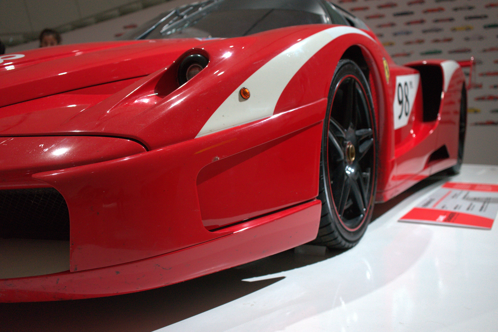

La mia passione per le auto nasce da piccolino, grazie a mio papà con il quale gurdavo i gran premi di formula 1...almeno io, lui spesso dopo nemmeno 5 giri già dormiva...comunque posso dire che tutto è nato da li. Sono passati diversi anni da quei week-end, eppure la domenica quando c'è il gran premio non me lo perdo per niente al mondo. Oltre alla Formula 1 la mia passione è anche per le auto in generale, di qualunque fascia, (anche se sportive sono le mie preferite...) mi piace informarmi su nuove uscite e novità meccaniche introdotte dalle case automobilistiche. Mi piace anche smontare e rimontare i pezzi della mia auto, più che altro per capire come sono fatti e il loro funzionanmento e per ora non ho mai rotto la macchina, e per me questa è una grande soddisfazione!. Adoro anche osservere la belle auto mentre sono a giro, infatti qua sotto ci sono alcuni scatti di alcune vetture avvistate e non solo... 👀.

Galleria Fotografica


